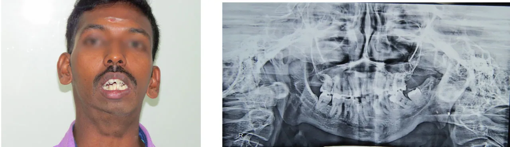
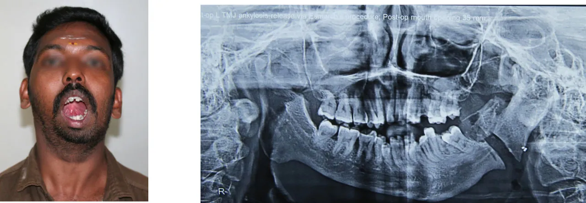
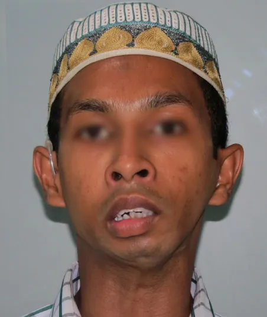
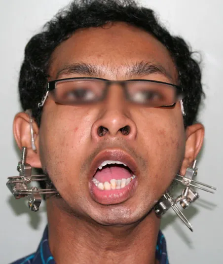

TMJ ankylosis occurs when the mobile lower jaw fuses with the skull and prevents the patient from opening the mouth.
Please read before continuing
Maxillofacial surgery and Orthodontics concerns surgical and non-surgical treatment of the face, head and
neck and jaws. The following pages contain surgical pictures including intra-operative, pre and post
operative images. We understand that it may not be appropriate for general viewing and these images are
shown with the sole aim of educating and creating awareness among the general population about the
problems associated with facial surgery, its potential complications and its possible solutions.
These images are completely under the copyright of the hospital and the viewer does not have any claim
whatsoever to these images.
Tick the box above to continue.
TMJ ankylosis occurs when the mobile lower jaw fuses with the skull and prevents the patient from opening
his mouth. This leads to an inability to chew food, poor oral hygiene and facial deformity.
Case 1
TMJ Ankylosis treated with Esmarch’s procedure and contralateral Coronoidectomy
This 34 year old man came to us with a complete ankylosis of his left temporomandibular joint (TMJ)
with only 1-2 mm mouth opening. He had had at least 3 attempts at relieving the TMJ ankylosis done
elsewhere in the past. All the attempts had failed and reankylosis had occurred. CT scans now showed the
callus to extend medially.
There were two options available to us: one was to release the ankylosis at the condylar level (which
would be the first choice in “fresh” cases), or alternatively one could do an
Esmarch’s procedure, whereby we would create a gap at the angle region and mobilise the
medial pterygoid and masseter muscles and suture them together thus creating a barrier to re-ankylosis.
Numerous studies have shown that patients who are prone to TMJ ankylosis have a very high osteogenic
potential at the condylar region and are thus very highly prone to re-ankylosis. Dr Esmarch proposed to
leave the condyle region alone and do a gap arthroplasty at the angle and interpose muscle between the
bony ends to prevent re-ankylosis. This procedure was named after its inventor as Esmarch’s
procedure.
Under general anaesthesia (retrograde nasal intubation confirmed with a video bronchoscope), a
submandibular incision was made and the gap arthroplasty was done at the angle region. Contralateral
coronoidectomy was also done to improve mouth opening further. On table the mouth opening was around 35
mm as measured with a caliper. Postoperatively he healed up well and is maintaining his mouth opening
currently at 35 mm. He has been strictly advised to do his jaw exercises on a daily basis and has been
placed on a normal diet. In fact we encourage him to eat hard food to create a nonunion. He is now due
for orthodontics and dental reconstruction followed by orthognathic surgery to correct the residual
facial deformity.
Airway management
The other main issue with TMJ ankylosis patients is the difficulty in intubating these patients as the
anatomy is distorted due to the deformity and there is also no mouth opening. An experienced difficult
airway team is vital to overcome these issues. At our centre we have various options available ranging
from tracheostomy, fibreoptic intubation, blind nasal or retrograde intubation.
Pre-opPost-op


Drag to compare. Pre-op maximal mouth opening was approximately 1-2 mm with a large ankylotic mass in the left condylar region; post-op it is approximately 34 mm following Esmarch’s procedure and contralateral coronoidectomy.
Retrograde intubation in progress.Videobronchoscopy confirming the ET tube is in the trachea.Gap created at angle region of mandible and muscle superimposed.Mouth opening on table approx 34-35 mm.
Case 2
Osteodistraction using Multiplanar Leibinger (German) osteodistractors
This 22 year old young man had had multiple attempts at releasing his TMJ ankylosis including
costochondral grafts etc done at centres elsewhere, all had failed. We then planned for him to
have osteodistraction in the first phase followed by ankylosis release.
Osteodistraction is a technique of slow bone distraction invented by Dr Ilizarov, a Russian orthopaedic
surgeon. Clinically it is used in situations where there is very little bone stock, where standard
osteotomy procedures cannot be done. The bone to be distracted is cut and an osteodistractor is placed
between the bony cuts; callus is allowed to form and then a slow distraction of 1 mm per day is done to
allow the callus to grow. Faster movement more than 1 mm will not allow the callus to grow and nonunion
will occur; slower movement less than 1 mm will cause premature consolidation.
Osteodistraction consists of 4 sequential phases: (1) osteotomy: bony cuts between segments and
osteodistractor placed; (2) latency of 3-5 days to allow the callus to form; (3) distraction of 1
mm per day to allow the bone to grow; (4) consolidation and remodelling: allows the distracted
callus to form into normal bone. This can be done in one plane, two planes or 3 planes (X, Y and Z
axis). Indian manufactured osteodistractors usually allow only uniplanar or biplanar osteodistraction.
Multiplanar osteodistractors are invariably imported from Germany and extremely expensive but results
are excellent.
We did a fibreoptic confirmation and then placed bilateral Leibinger multiplanar osteodistractors. After
a latency phase of 5 days we started osteodistraction at the rate of 1 mm per day. Each axis (X, Y and
Z) was addressed separately and a movement of over 43 mm was done finally. After consolidation for 2.5
months the osteodistractors were removed. The bone has grown very well and amazingly the mouth opening
also increased simultaneously. We suspect this is due to a leverage effect. Thus the patient will now
only need a genioplasty (a much simpler procedure with good results) and not a TMJ ankylosis release
procedure (a more complicated procedure). Multiplanar distraction was the best way forward for this
patient as it allowed maximum control, albeit being a bit costly.
The patient was extremely pleased with the results, he had never opened his mouth since he was
2 years old and for the first time in 20 years he was able to take a normal diet and look normal. He
had dropped out from school due to constant teasing and has now enrolled in a re-education programme,
a clear instance of keeping up with our motto of “Saving faces and Changing lives”.
The happiness and confidence that we see in these patients post-operatively makes all this hard work
worthwhile.
Pre-opPost-op


Drag to compare. Maximum mouth opening was only 1-2 mm despite numerous previous attempts at ankylosis release; after multiplanar Leibinger osteodistraction it has greatly increased.
Leibinger multiplanar osteodistractors (German).Fibreoptic intubation being done by the anaesthesia team.
Questions
Frequently asked questions
Clear answers to the questions patients ask us most. For anything else, call +91 91599 99362.
What is TMJ ankylosis?
A condition in which the lower jaw fuses with the skull at the jaw joint, so the mouth cannot open. It makes chewing difficult, affects oral hygiene and can lead to facial deformity.
How is TMJ ankylosis treated?
With surgery to free the jaw, such as a gap arthroplasty or Esmarch’s procedure, sometimes with a coronoidectomy, followed by daily jaw exercises to keep the mouth opening.
How is anaesthesia given when the mouth cannot open?
These patients are difficult to intubate, so an experienced difficult airway team is vital. Our centre has options ranging from fibreoptic, blind nasal and retrograde intubation to tracheostomy.
Ready to talk to a specialist?
We are located 2 minutes’ walk from the Anna Bus Stand, with adequate off-street car parking.